Funding Agent: National Rehabilitation Center, Ministry of Health and Welfare of South Korea (보건복지부 국립재활원), (Apr 2023 ~ Nov 2025)
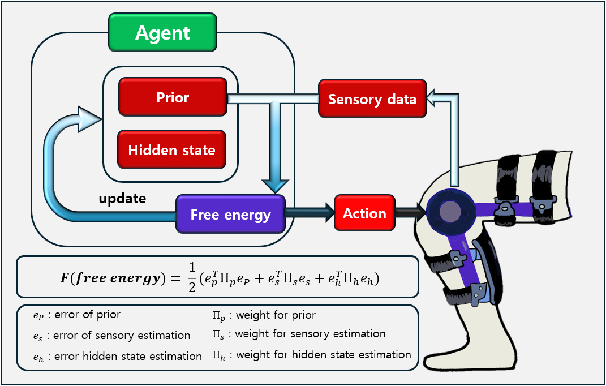
This project developed controllers for a powered knee exoskeleton based on the Free Energy Principle (FEP), a theory that unifies perception, motor control, and learning as the minimization of free energy. For perception, FEP uses only the observed signals and prior beliefs about noise, so it can estimate hidden states and filter noise with little delay. For control, it generates commands faster than conventional optimization and adapts to the environment without training complex learning models such as CNNs or RNNs. We built FEP-based state estimators for nonlinear systems and an Active Inference framework that performs control and disturbance-torque estimation in one step, and we validated it experimentally on robotic hardware. This work became the foundation of our ongoing FEP-based personalized exoskeleton control research.
Related publications: Moon et al., State Estimation of Nonlinear System Based on Free Energy Principle, ICROS 2024; Ryu and Hur, Active Inference-Based Control and Disturbance Torque Estimation, ICROS 2025; Ryu and Hur, Active Inference for Unified Control and Disturbance Estimation in Robotics: An Empirical Study, AMC 2026.
Funding Agent: National Rehabilitation Center, Ministry of Health and Welfare of South Korea (보건복지부 국립재활원), (Apr 2023 ~ Nov 2025)
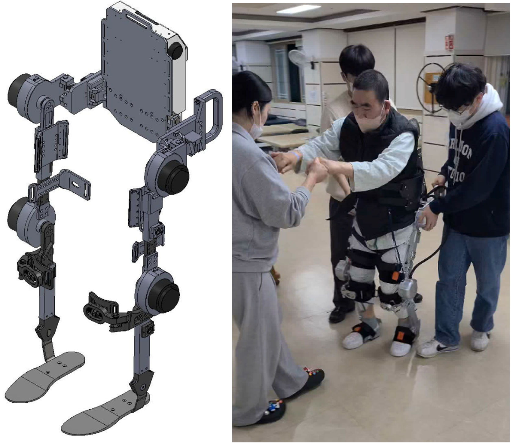
This project developed an AI-based overground walking exoskeleton for gait rehabilitation of people with hemiplegia, together with NT Robot. Our group was responsible for the control technology. We mapped gait data with and without a walker, developed trajectory-tracking control based on gait data, and designed compliance control suited to rehabilitation of both the affected and unaffected sides. The resulting lower-limb exoskeleton applies asymmetric torque to the two legs to match the needs of hemiparetic patients.
Related publications: Cho et al., Development of a Lower Limb Exoskeleton for Gait Rehabilitation in Hemiparetic Patients, ICROS 2025 and ICCAS 2025; Cho et al., Design and Control of an Asymmetric-Torque Exoskeleton for Gait Rehabilitation in Hemiparetic Patients, IFAC World Congress 2026.
Funding Agent: Ministry of Culture, Sports and Tourism (문체부), (Jun 2023 ~ May 2025)
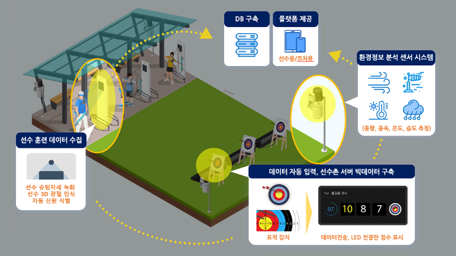
As part of an AI-based platform for motion analysis and data integration to improve the performance of the national archery team, this project developed a module that analyzes recurve archers' movements from IMU data, together with their shooting outcomes, using data analysis and machine learning. The goal was to give athletes and coaches insights that improve performance. The module is a key component of an integrated platform for systematically managing and scientifically evaluating athletes' training and competition records. We also checked the accuracy and reliability of video-based motion data against IMU sensor data.
Funding Agent: Sunhan Hospital (광주선한병원), (Nov 2022 ~ Oct 2024)
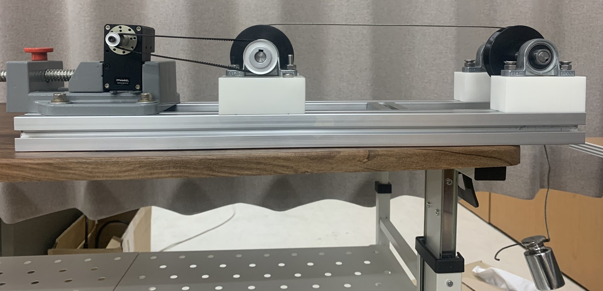
Joint rigidity (ankylosis) stiffens joints and limits movement, often with pain, and physical therapy after surgery is essential to restore daily activities. Commercial continuous passive motion (CPM) machines are bulky and heavy, so they can only be used in specific indoor spaces and cannot estimate the stiffness of the patient's joint. This project developed a lightweight, wearable rehabilitation robot that patients can use at home or at work. Starting from a motor test bed, we determined the required torque (at least 15 N·m to lift the shank of an 80 kg adult) and built a prototype with a detachable motor and twist-lock attachment. It offers manual, progressive, and pause modes with adjustable time, speed, and range of motion, controlled over Bluetooth, with smartphone control in development. We also developed a deep-learning method that estimates joint stiffness and damping from a small amount of data, to adapt the CPM motion to each patient.
Related publication: Park and Hur, Deep learning-based estimation of human joint stiffness for portable CPM device control, ICROS 2024.
Funding Agent: LG Electronics, (May 2024 ~ Jul 2024)
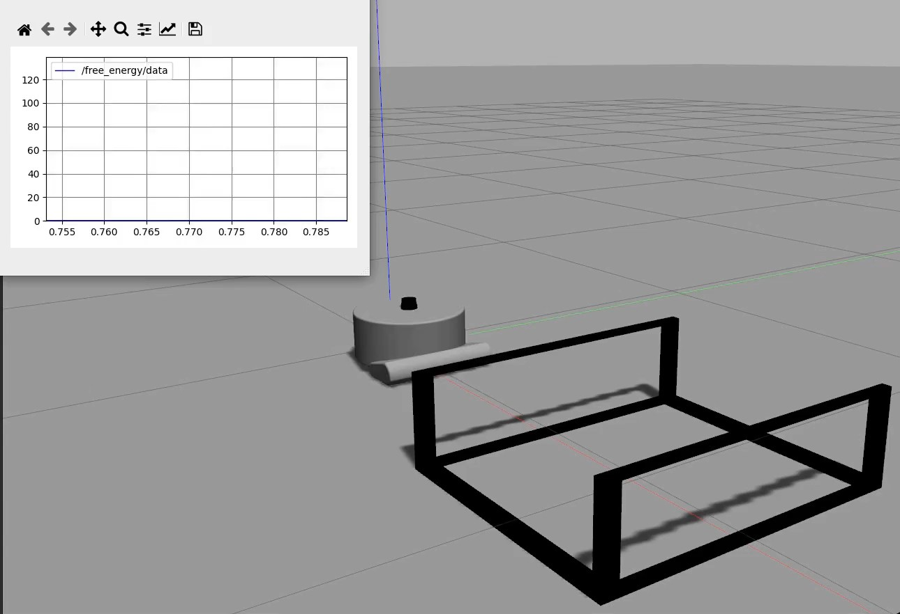
Robot vacuum cleaners often get stuck under furniture, window frames, and other obstacles because obstacles at certain heights are not detected by their LiDAR, bumper, and laser sensors. The robot treats them as open floor and forces its way in. This project applied the Free Energy Principle (FEP) to detect such situations before the robot gets stuck. The robot compares what it senses (orientation, velocity, motor torque, and wheel speed) with what it expects during normal driving, and when the resulting free energy exceeds a threshold, it acts to escape. In a Gazebo simulation of a cordless robot cleaner approaching four types of obstacles from various angles and heights, the robot escaped successfully in 80–100% of trials, depending on the obstacle.
Funding Agent: GIST AI기반 융합인재 양성 지원사업, (Jan 2024 ~ Dec 2024)
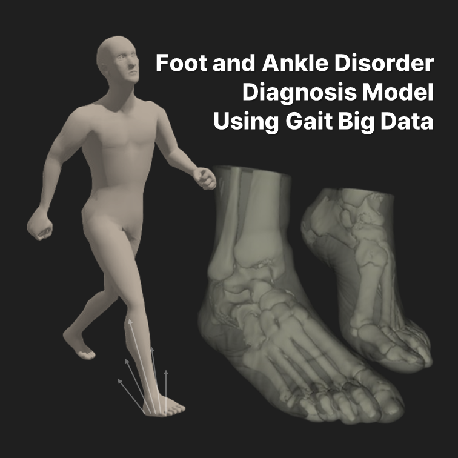
This project developed a diagnostic model for foot and ankle disorders that links anatomical features with gait patterns, using medical images and gait data, including AI Hub's large "Gait Video Data for Foot Disorders and Rehabilitation Progress Evaluation" dataset. The large dataset overcame the small sample sizes of earlier studies. Applying statistical shape models to X-ray images, we visualized bone shapes and orientations to show the differences between disorders intuitively. Machine learning was then used to identify the anatomical and gait variables that best distinguish each disorder, toward fast and accurate diagnosis with clinically interpretable results.
Related publications: Lee and Hur, Localized Morphological Differentiation of Foot Disorders via Statistical Shape Modeling, KSME Bioengineering Conference 2025; Lee, Kim, and Hur, Development and Interpretation of a Diagnostic Model for Foot and Ankle Diseases Using Public Medical Imaging (journal paper in preparation).
Funding Agent: GIST, (Jan 2021 ~ Dec 2022)
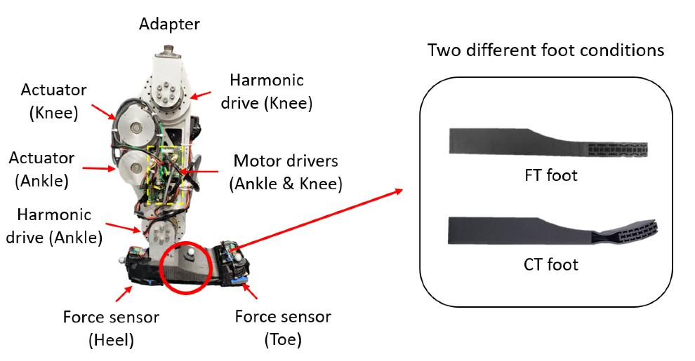
This project developed human-robot interaction technologies for people with transfemoral amputation, using our powered knee-ankle prosthesis, AMPRO II. To make the prosthesis move in step with the user, we developed several gait phase estimation methods: a phase-shifted phase variable from thigh motion, LSTM-based estimation that works across walking speeds, a piecewise linear labeling method for better speed adaptability, and a piecewise phase variable that accounts for changes in toe-off timing. We also designed 3D-printable prosthetic feet that mimic the nonlinear stiffness of the human toe joint. A curved-toe foot with an auxetic structure gave longer push-off, a more symmetric gait, and more accurate gait phase estimation in tests with an amputee.
Related publications: Hong et al., IEEE RA-L 2021; Lee et al., IEEE TNSRE 2021; Um et al., Scientific Reports 2021; Hong et al., IEEE RA-L 2022; Hong et al., IEEE RA-L 2023; Hong et al., IEEE TNSRE 2023.
Funding Agent: Horses and Humans Research Foundation, (Jan 2018 ~ Jun 2019); Texas A&M Mechanical Engineering Research Priming Seed Grant, (Apr 2019 ~ Apr 2020)
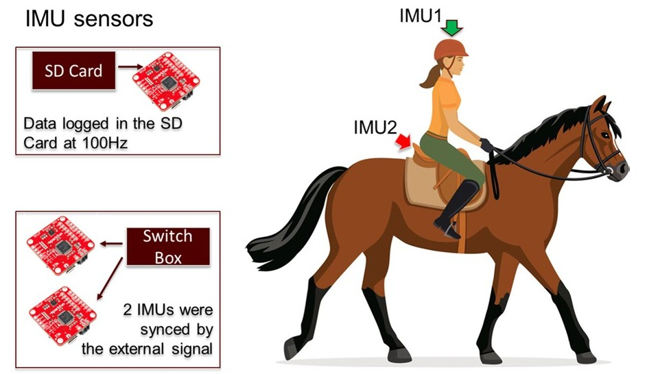
Hippotherapy uses the walking motion of a horse, which resembles human gait, as a therapy tool for children with cerebral palsy (CP). To understand how it works, we built wireless IMU systems that record the motion of both the child and the horse during therapy sessions. In a pilot study, four children with CP received eight physical therapy sessions incorporating equine movement. Their functional mobility improved modestly, and over the sessions, the children's vertical accelerations became more synchronized with the horse's walk. These results suggest that the horse's rhythmic, gait-like motion may support motor learning in children with CP.
Related publications: Lightsey et al., Physical therapy treatments incorporating equine movement: a pilot study exploring interactions between children with cerebral palsy and the horse, Journal of NeuroEngineering and Rehabilitation, 2021; Lee et al., ASB 2020; Lightsey et al., HETI International Congress 2021.
Funding Agent: Texas A&M Aggie Challenge, (Sep 2018 ~ May 2020)
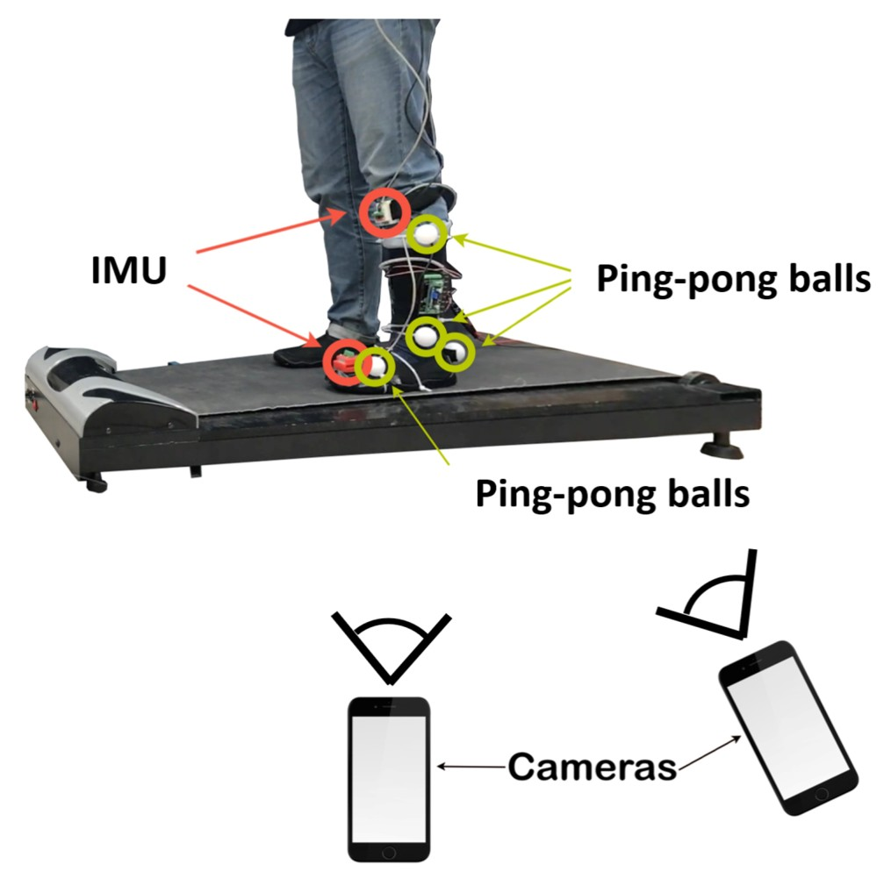
Commercial motion capture systems are expensive and hard to move, which limits gait analysis in low-income countries. In this undergraduate research project, we developed a low-cost, portable alternative using two ordinary smartphones. Ping-pong balls served as markers on the shank and foot, the cameras were calibrated with the direct linear transformation (DLT) method, and markers were tracked with OpenCV and reconstructed in 3D to compute the ankle joint angle. In a treadmill walking test, the smartphone system followed the same ankle-angle pattern as an IMU-based system throughout the gait cycle, showing the feasibility of the approach.
Related publication: Currin et al., A preliminary study of a motion capture system using smartphones for the ankle joint analysis, ASB 2020.
Funding Agent: National Science Foundation (NSF) AGEP, (Sep 2018 ~ Jan 2019)
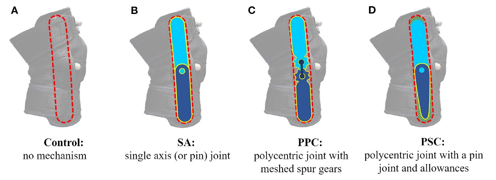
Exoskeletons and knee braces usually assume that the knee rotates about a single, fixed axis, but the real knee's center of rotation moves during motion. The mismatch makes the device slide on the leg and press on the user. This project compared three knee mechanisms, a single-axis joint, a polycentric joint with meshed gears, and a self-aligning polycentric joint with a pin and allowances, in braces that were otherwise identical. In tests with ten healthy participants, none of the mechanisms changed walking kinematics or kinetics, but the self-aligning mechanism slipped down the leg significantly less. We also surveyed people with impaired mobility about what they need from an exoskeleton, to guide future device design.
Related publications: Patrick et al., Evaluating Knee Mechanisms for Assistive Devices, Frontiers in Neurorobotics, 2022; Anil Kumar et al., Pilot Study on the Needs of Prospective Exoskeleton Users with Impaired Mobility, IEEE ARSO 2019.
Funding Agent: Texas A&M Division of Research, PESCA, (May 2017 ~ Apr 2018)
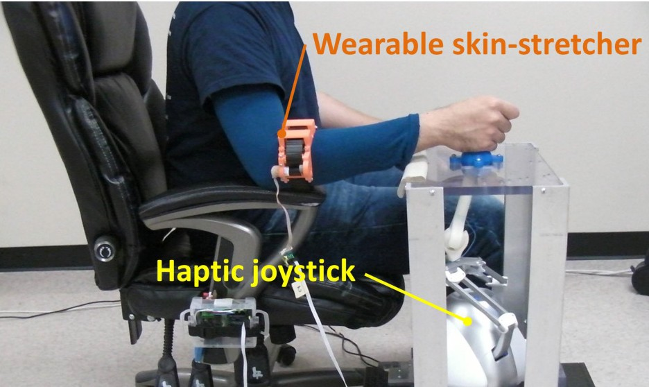
This project developed a robotic rehabilitation framework for people with upper-limb impairment, built around haptic feedback interfaces. We combined a wearable skin-stretch device on the forearm with a force-feedback haptic joystick. In a virtual power-wheelchair driving task with older adults, performance improved significantly only when both types of feedback were used together, showing a synergistic effect. We also customized haptic and visual assistance to each user by modeling their control strategy with inverse optimal control, mapped how skin-stretch patterns are perceived as directions and intensities, and developed a handheld gyroscopic device that can move the wrist for haptics and hand rehabilitation.
Related publications: Yoon et al., Frontiers in Neurorobotics, 2017; Yoon et al., Robotics and Autonomous Systems, 2017; Anil Kumar and Hur, IEEE Transactions on Haptics, 2022.
Funding Agent: NIOSH Pilot Project Research Training, Southwest Center for Occupational and Environmental Health, (Jul 2016 ~ Jun 2017)
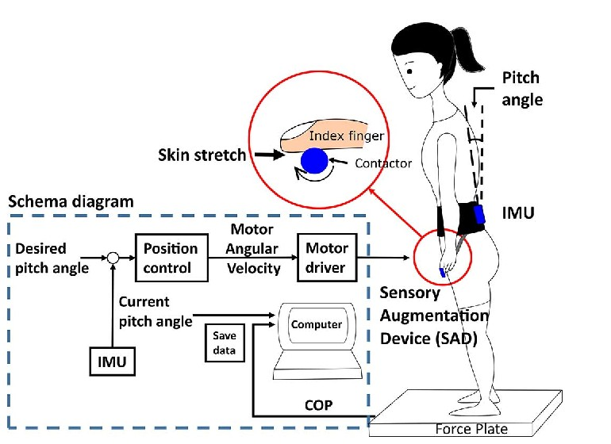
Falls are a leading cause of injury among aging workers. This project developed a portable sensory augmentation device that gives an extra sense of body sway through the fingertip. An IMU at the waist measures sway, and a small motor-driven contactor stretches the skin of the index fingertip to signal posture. When vision and vestibular input were removed, skin-stretch feedback helped people correct their posture, and the benefit grew as sensory loss became more severe. Velocity-based feedback also reduced the entropy of postural sway, which we explained with the Free Energy Principle, the starting point of our later FEP research. We extended the concept to an interactive balance training tool and a walker with a skin-stretch handle.
Related publications: Pan et al., A Portable Sensory Augmentation Device for Balance Rehabilitation Using Fingertip Skin Stretch Feedback, IEEE TNSRE, 2017; Hur et al., Free Energy Principle in Human Postural Control System: Skin Stretch Feedback Reduces the Entropy, Scientific Reports, 2019; Pan and Hur, IEEE RO-MAN 2017; Pan et al., IEEE RO-MAN 2018.
Funding Agent: American Heart Association (AHA) Postdoctoral Fellowship, (Jul 2012 ~ Jun 2014)
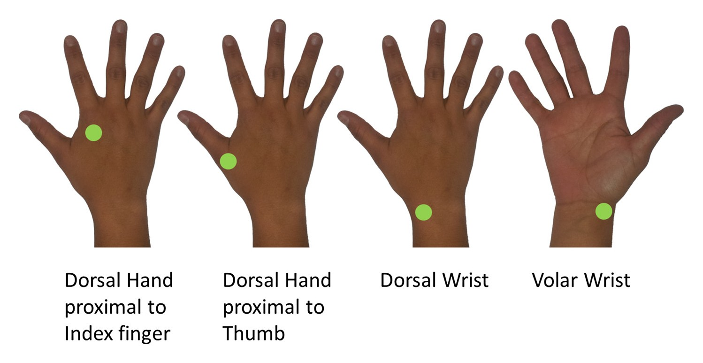
Many stroke survivors lose touch sensation in their fingers, which impairs hand function. This project tested whether imperceptible random vibration (vibrotactile noise) applied away from the fingertips, at the wrist or the back of the hand, could improve sensation through stochastic resonance without getting in the way of grasping. In chronic stroke survivors, the noise immediately improved light-touch sensation at the fingertips. Applied at the wrist, it also improved dexterity (Box and Block Test, Nine-Hole Peg Test) and pinch strength. In healthy adults, the noise shortened muscle reaction time to sudden handle perturbations. These results point toward a wristband-type device to support hand rehabilitation after stroke. This work was done at the University of Wisconsin–Milwaukee with Prof. Na Jin Seo.
Related publications: Enders et al., Journal of NeuroEngineering and Rehabilitation, 2013; Hur et al., IEEE Transactions on Biomedical Engineering, 2014; Seo et al., Frontiers in Human Neuroscience, 2014.
Funding Agent: NIH R24 Rehabilitation Engineering Research Network, (Jul 2012 ~ Jun 2013)
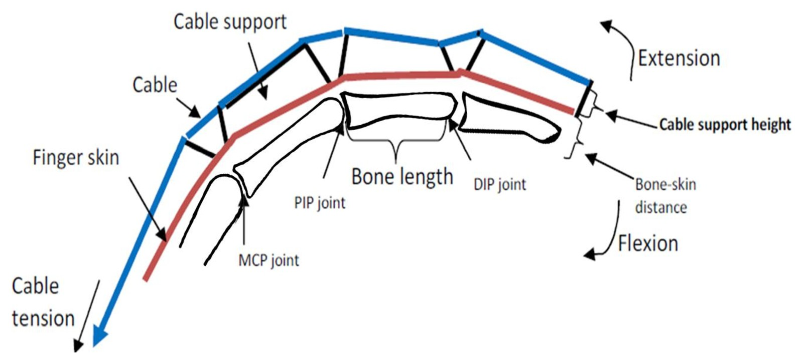
Many stroke survivors can close their fingers but cannot open them. Existing cable-driven assistive gloves run the cable parallel to the back of the finger, which opens the finger along an unnatural path and causes discomfort. This project built a dynamic model of the finger and glove, using joint stiffness and damping typical of stroke, and optimized the height of the cable supports and the cable tension so that the finger opens like a healthy finger. The optimized design greatly reduced the difference from a healthy opening motion. A follow-up study compared different support shapes and found one that reduced the effort to close the finger by 33% and the pressure on the skin by 52%. This work was done at the University of Wisconsin–Milwaukee with Prof. Na Jin Seo.
Related publications: Hur et al., Society for Neuroscience 2012; Hur et al., Optimizing cable-driven assistive glove design to help open post-stroke paretic hand, World Congress of Biomechanics 2014.
Funding Agent: NIOSH Pilot Project Research Training, (Jul 2012 ~ Jun 2013)
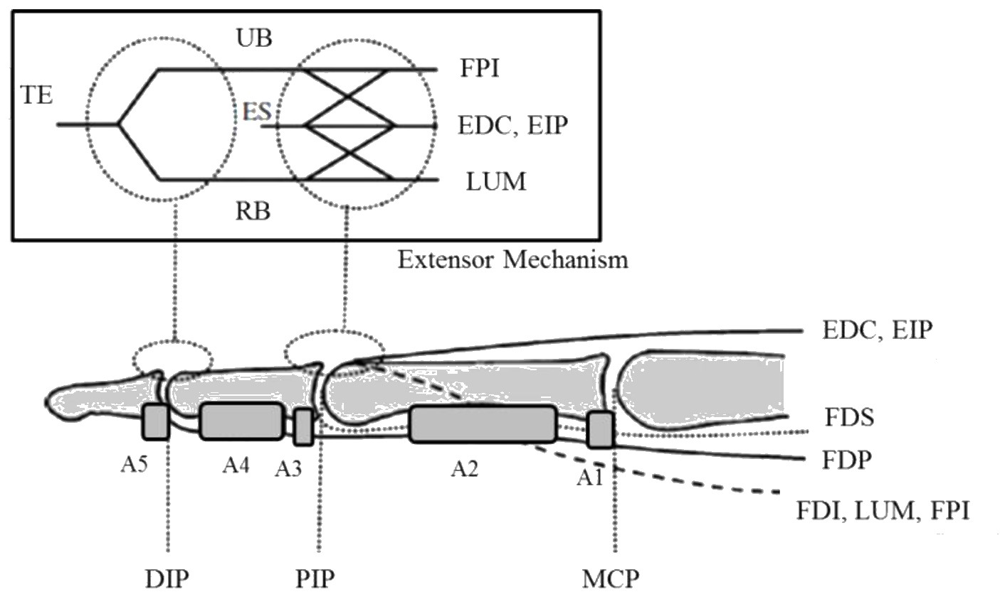
Hand and finger injuries account for about one third of workplace injuries, yet existing grip-strength data apply only to the handles that were tested, and existing finger models predict force only at the fingertip. This project developed a biomechanical index-finger model with seven muscles that includes the tendon–pulley mechanism, passive joint properties, and the extensor mechanism. Using optimization, the model predicts the grip forces at each finger segment (distal, middle, and proximal phalanges) for different finger postures. Its predictions followed trends reported in the literature and were compared with measured grip forces on handles of six different shapes. This work was done at the University of Wisconsin–Milwaukee with Prof. Na Jin Seo.
Related publication: Hur et al., Development of biomechanical index finger model to predict multi-segmental grip forces for varying finger postures, ASB 2013.
Funding Agent: NIOSH Pilot Project Research Training, (Jul 2011 ~ Jun 2012)
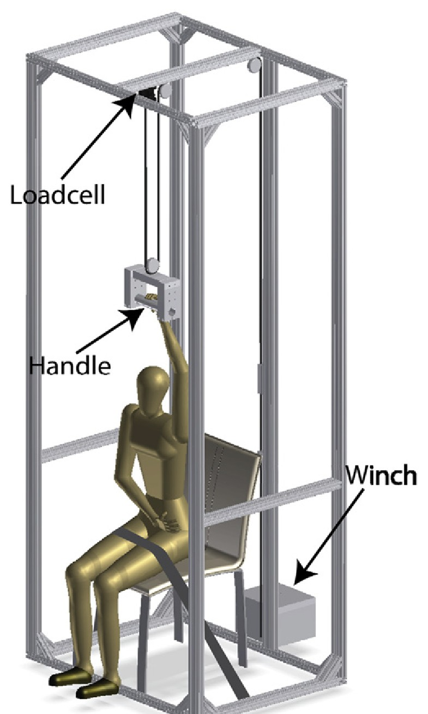
Once a fall from a ladder begins, the hands are the only way to stop it. This project studied "hand breakaway strength," the force the hand can hold on a rung before it slips off. We built biomechanical models that include both grip force and hand–rung friction, and tested them with a rig that pulls the rung out of the hand. Breakaway strength increased with friction (polyester glove < bare hand < latex glove), and a circular rung held better than a square rung when friction was high enough. In simulated falls, low-friction gloves required more muscle effort and allowed more handle displacement, and imperceptible vibrotactile noise on the arm shortened reaction time. These findings show that glove friction and rung shape can decide whether a person can hold their body weight. This work was done at the University of Wisconsin–Milwaukee with Prof. Na Jin Seo.
Related publications: Hur et al., Hand breakaway strength model, Journal of Biomechanics, 2012; Hur et al., Muscular responses to handle perturbation with different glove condition, Journal of Electromyography and Kinesiology, 2014; Hur et al., Investigating the Role of Vibrotactile Noise in Early Response to Perturbation, IEEE Transactions on Biomedical Engineering, 2014.